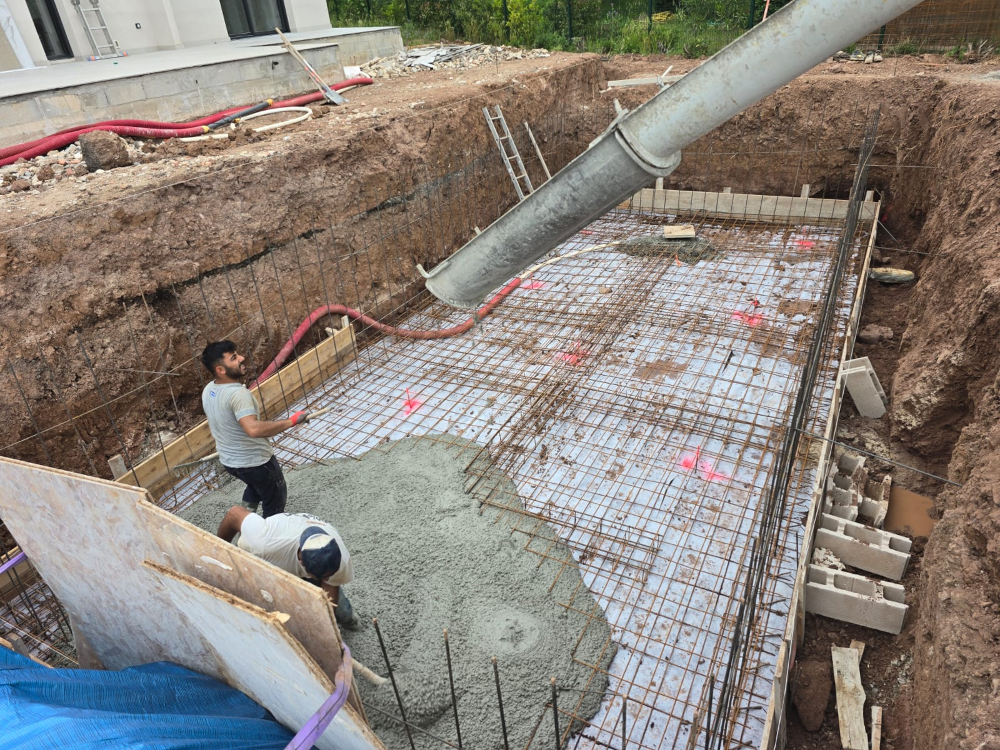

Nos réalisations en terrassement

Maison neuve
Travaux de terrassement pour maison individuelle : nivellement du terrain, création des accès et préparation des fondations. Une étape clé pour assurer la stabilité et la longévité de votre future construction

Terrassement piscine
Travaux de terrassement pour piscine enterrée : creusement du bassin, nivellement du sol et préparation du drainage. Nos équipes assurent un terrassement précis pour garantir la durabilité et l'étanchéité de votre installation.